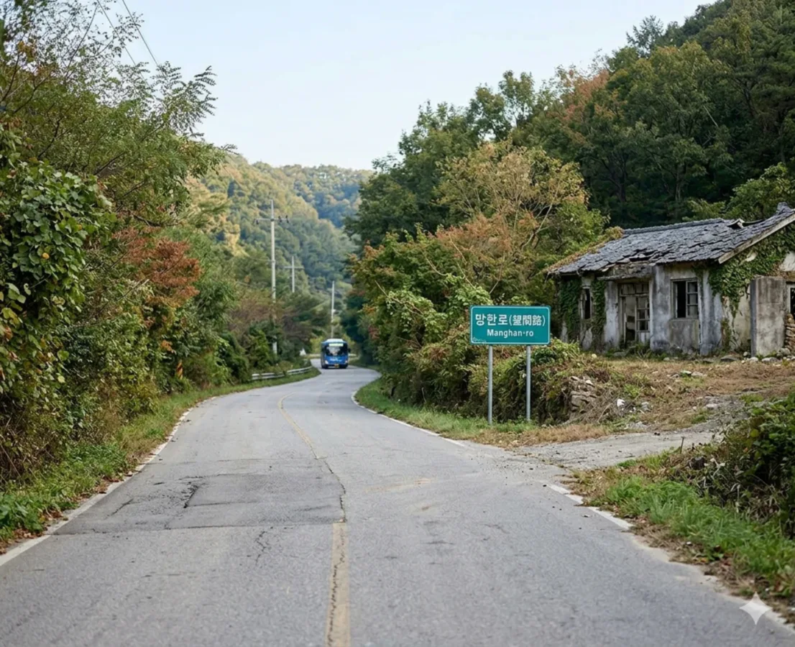
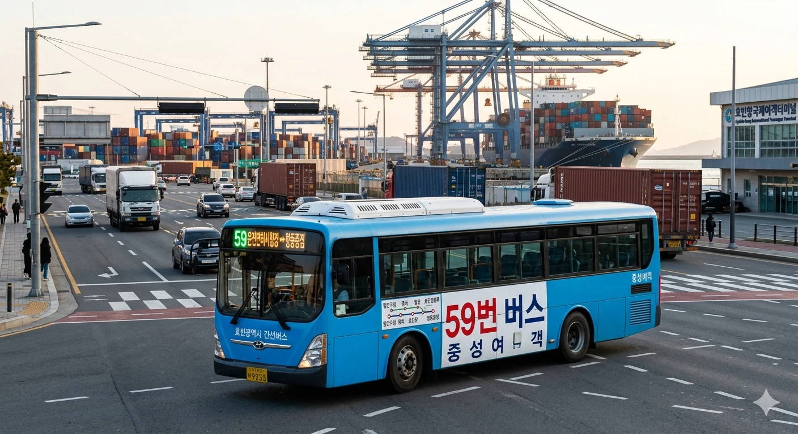
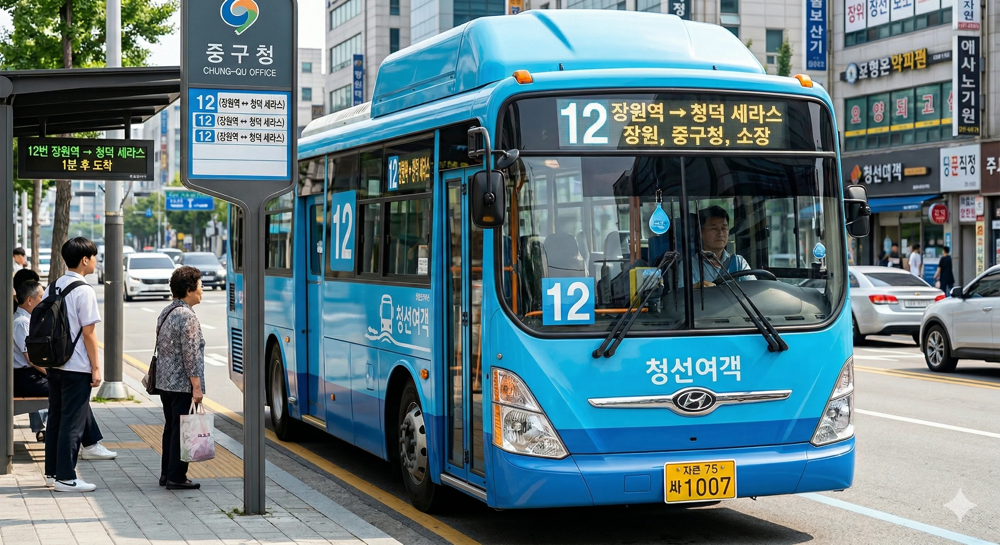
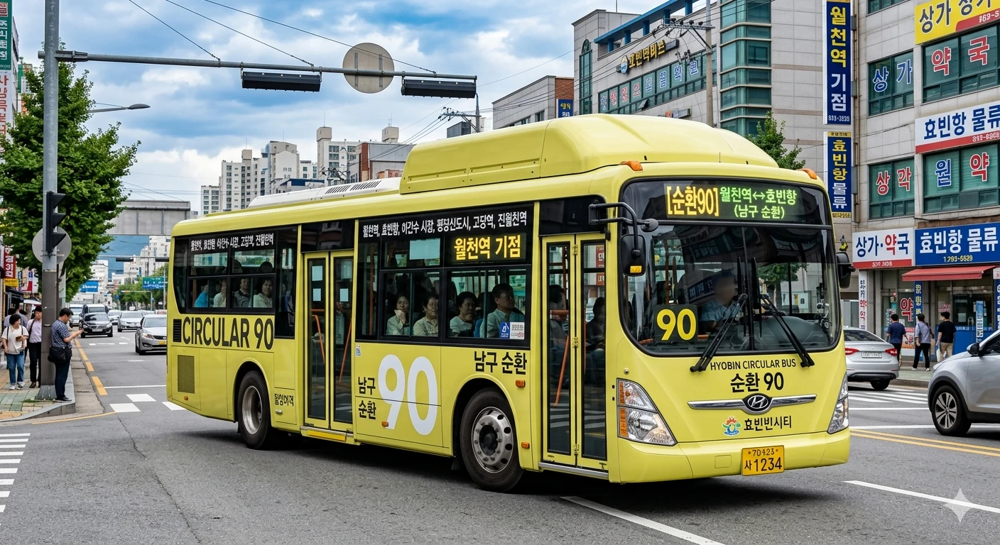
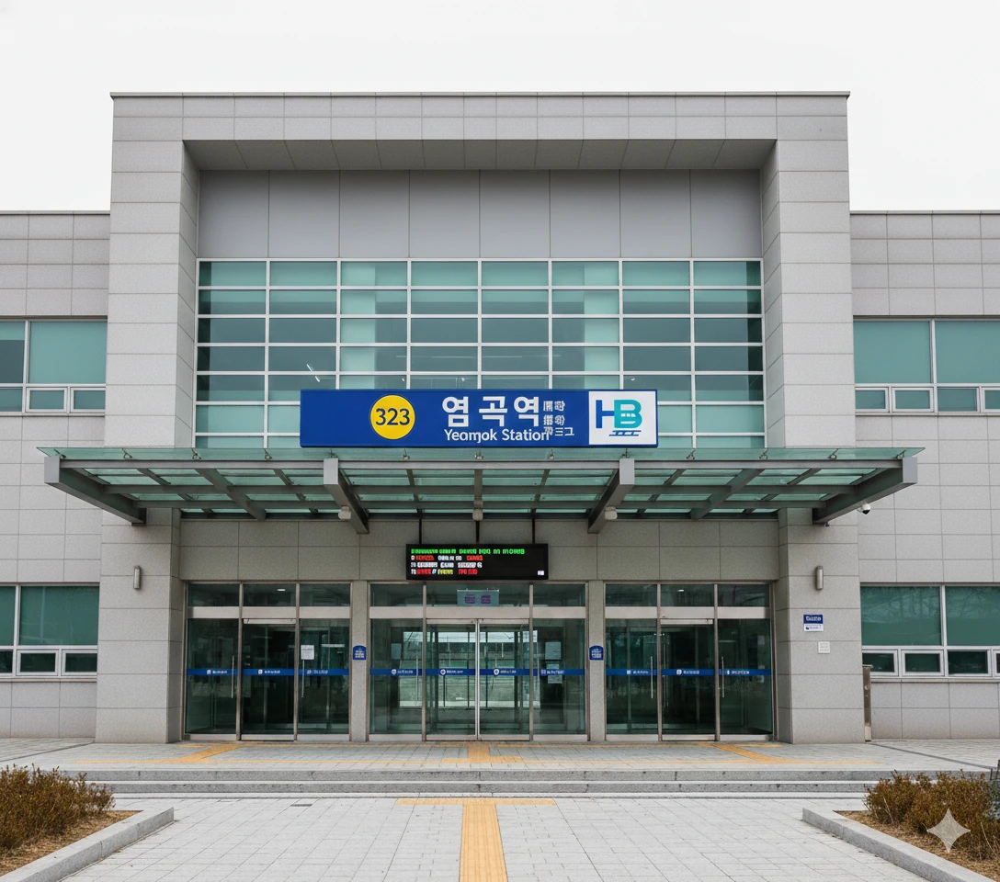
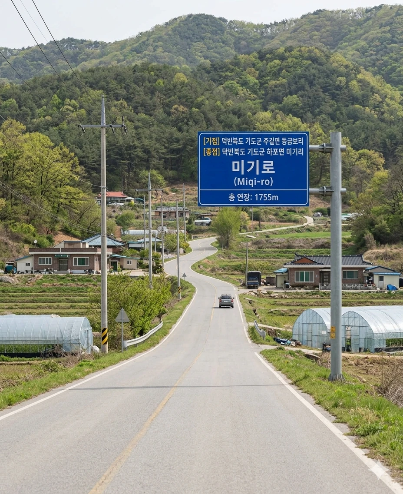

효빈광역시 관내 도로 목록 (ㅁ)
문서
토론
편집
역사
분류:
효빈광역시 | 도로 | 교통 | ㅁ목록
초성 이동:
ㄱ (50)
ㄴ (17)
ㄷ (19)
ㄹ (2)
ㅁ (12)
ㅂ (14)
ㅅ (34)
ㅇ (77)
ㅈ (28)
ㅊ (29)
ㅋ (2)
ㅌ (5)
ㅍ (19)
ㅎ (35)
기타 (5)
| 사진 | 도로명 | 노선 색상 | 총 연장 | 기점 | 종점 | 경유 행정구역 | 경유 버스 | 주요 시설물 |
|---|---|---|---|---|---|---|---|---|
| 마야로 |
#7777AA |
4109m | 덕빈북도 낭원군 내덕면 석체리 | 덕빈북도 천주시 천성구 마야동 | 덕빈북도 낭원군 내덕면 석체리 | 덕빈북도 천주시 천성구 천성동(방상동) | 덕빈북도 천주시 천성구 천성동(지굴동) | 덕빈북도 천주시 천성구 마야동 | 경유 버스 없음 | ||

|
만당로 |
#7777AA |
4361m | 덕빈북도 기도군 염곡읍 신산리 | 덕빈북도 기도군 염곡읍 풍야리 | 덕빈북도 기도군 염곡읍 신산리 | 덕빈북도 기도군 염곡읍 풍야리 | 광역버스3000, 좌석버스2222, 좌석버스3333, 공항버스 A01, 공항버스A03 | |
|
 |
망한로 |
#7777AA |
8770m | 효빈광역시 탄성군 야진읍 신리 | 효빈광역시 탄성군 야진읍 원심리 | 효빈광역시 탄성군 야진읍 신리 | 효빈광역시 탄성군 야진읍 미우리 | 효빈광역시 탄성군 야진읍 원심리 | 순환버스60, 간선버스36, 간선버스68, 간선버스69, 마을버스 야진01, 마을버스 도변01 | |

|
모포로 |
#7777AA |
10854m | 효빈광역시 북구 중수1동(중수동) | 효빈광역시 창전구 창전4동(창전동) | 효빈광역시 북구 중수1동(중수동) | 효빈광역시 안천구 북택동 | 효빈광역시 창전구 진백동 | 효빈광역시 창전구 창전4동(창전동) | 효빈광역시 북구 중수3동(중수동) | 효빈광역시 청엽구 우택동 | 효빈광역시 창전구 칠심1동(칠심동) | 급행버스01, 급행버스02번, 급행버스03번, 급행버스05, 급행버스06, 급행버스07, 순환버스30, 순환버스70, 광역버스2000, 광역버스6000, 광역버스 9000, 공항버스 A01, 공항버스A03, 간선버스14, 간선버스15, 간선버스16, 간선버스17, 간선버스18, 간선버스24, 간선버스25, 간선버스27, 간선버스36, 간선버스37, 간선버스38, 간선버스39, 간선버스 47, 간선버스48, 간선버스49, 간선버스57, 간선버스58, 간선버스59, 간선버스67, 간선버스68, 간선버스69, 간선버스 77, 간선버스78, 간선버스79, 간선버스88, 간선버스89, 지선버스131, 지선버스132, 지선버스141, 지선버스151, 지선버스154, 지선버스161, 지선버스171, 지선버스172, 지선버스173, 지선버스181, 지선버스231, 지선버스232, 지선버스241, 지선버스261, 지선버스262, 지선버스271, 지선버스334, 지선버스341, 지선버스 361, 지선버스371, 지선버스831, 지선버스471, 지선버스472, 지선버스481, 지선버스491, 지선버스522, 지선버스591, 지선버스592, 지선버스162, 지선버스362, 지선버스671, 지선버스682, 지선버스692, 지선버스771, 지선버스 781, 지선버스791, 지선버스 482, 지선버스 881, 지선버스891, 지선버스892 | 남전도매시장, 남전동행정복지센터, 덕현에아파트, 우택초, 오양초, 창전라포르테아파트, 우택동행정복지센터, 칠심3동행정복지센터, 중수 SK뷰 아파트, 남전휴먼시아2단지, 칠심동, 남전역 행복주택, 남전전자상가, 월삼여자중고등학교, 월삼여고, 은내중, 창전 주공아파트, 파밀리에 칠심아파트, 창전디아채, 버거킹 남전점, 칠심주공4단지, 미소지움 창전, 동구대학교, 북택 헬로해피아파트, 월남초, 창전구영아파트, 창전이지움 아파트, 남전역 리젠시빌아파트, 중수 두산위브 아파트, 코페아파트, 알르밍아파트, 채산식품산단 |
|
 |
무개로 |
#7777AA |
4725m | 효빈광역시 남구 항2동(항동1가) | 효빈광역시 남구 항3동(항동3가) | 효빈광역시 남구 항2동(항동1가) | 효빈광역시 남구 항3동(항동1가) | 효빈광역시 남구 항3동(항동3가) | 급행버스09, 순환버스90, 간선버스39, 간선버스49, 간선버스59, 간선버스69, 간선버스79, 지선버스192, 지선버스194, 지선버스391, 지선버스491, 지선버스492, 지선버스591, 지선버스592, 지선버스691, 지선버스692, 지선버스792, 지선버스892 | 하림 효빈1공장, 항동남서, 항동남서아파트, 항동삼각공원 |
| 무기로 |
#7777AA |
3864m | 덕빈북도 천주시 궁하구 궁하2동(궁하동) | 덕빈북도 약산시 장곡읍 무기리 | 덕빈북도 천주시 궁하구 궁하2동(궁하동) | 덕빈북도 천주시 궁하구 궁하1동(궁하동) | 덕빈북도 약산시 장곡읍 장선리 | 덕빈북도 약산시 장곡읍 무기리 | 덕빈북도 약산시 장곡읍 입주리 | 경유 버스 없음 | ||
|
 |
무창로 |
#7777AA |
532m | 효빈광역시 서구 당선3동(당선동) | 효빈광역시 서구 당선3동(당선동) | 효빈광역시 서구 당선3동(당선동) | 간선버스11, 간선버스12, 간선버스29, 지선버스261, 지선버스281 | 당선중, 당선초, 당선 아쿠아 3단지 |
|
 |
문간로 |
#7777AA |
2447m | 효빈광역시 남구 어간1동(어간동) | 효빈광역시 남구 항3동(항동2가) | 효빈광역시 남구 어간1동(어간동) | 효빈광역시 남구 항3동(항동2가) | 효빈광역시 남구 항3동(항동1가) | 급행버스09, 순환버스90, 간선버스39, 간선버스49, 간선버스59, 간선버스69, 간선버스79, 간선버스89, 지선버스192, 지선버스194, 지선버스391, 지선버스492, 지선버스591, 지선버스592, 지선버스792, 지선버스892 | 토장병원, 어간주공1단지, 어간주공2단지 |

|
문천로 |
#7777AA |
6536m | 효빈광역시 안천구 북택동 | 효빈광역시 창전구 창전4동(창전동) | 효빈광역시 안천구 북택동 | 효빈광역시 창전구 광정동(생덕동) | 효빈광역시 창전구 창전4동(창전동) | 효빈광역시 창전구 진백동 | 효빈광역시 창전구 창전5동(창전동) | 급행버스06, 순환버스70, 광역버스 5000, 광역버스6000, 광역버스 9000, 공항버스A03, 간선버스14, 간선버스16, 간선버스26, 간선버스36, 간선버스37, 간선버스48, 간선버스49, 간선버스57, 간선버스58, 간선버스67, 간선버스 77, 간선버스78, 간선버스88, 간선버스89, 지선버스141, 지선버스151, 지선버스161, 지선버스171, 지선버스172, 지선버스261, 지선버스271, 지선버스371, 지선버스 582, 지선버스591, 지선버스162, 지선버스362, 지선버스671, 지선버스672, 지선버스681, 지선버스691, 지선버스572, 지선버스 781, 지선버스793, 마을버스 광정01 | 고려풀비체 창전, 효빈창전교육지원청, 진백영무예다음아파트, 네리아파트, 창전소방서, 창전5동행정복지센터, 생덕초, 효빈외고, 창전경찰서, 진백초, 하구초중학교, 보통초, 북택사원아파트, 회전초, 창전 웰라움아파트 |
|
 |
문향로 |
#7777AA |
2732m | 덕빈북도 기도군 염곡읍 염곡리 | 덕빈북도 기도군 진경면 기선리 | 덕빈북도 기도군 염곡읍 염곡리 | 덕빈북도 기도군 진경면 기선리 | 경유 버스 없음 | |
| 문화로 |
#7777AA |
3664m | 효빈광역시 남구 평당4동(평당동) | 효빈광역시 남구 평당6동(평당동) | 효빈광역시 남구 평당4동(평당동) | 효빈광역시 남구 평당6동(평당동) | 효빈광역시 남구 평당7동(평당동) | 급행버스04, 급행버스05, 공항버스A02, 간선버스19, 간선버스29, 지선버스191, 지선버스291, 지선버스791, 지선버스793, 지선버스891, 지선버스991 | 평당흥한웰가아파트, 평당자이2단지, 능남공원, 능남역, 앵판초 | |
|
 |
미기로 |
#7777AA |
1755m | 덕빈북도 기도군 주길면 동금보리 | 덕빈북도 기도군 하포면 미기리 | 덕빈북도 기도군 주길면 동금보리 | 덕빈북도 기도군 하포면 미기리 | 경유 버스 없음 |